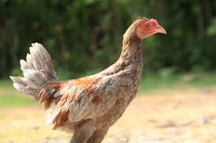

Panduan Lengkap Memilih Bibit (Bakalan) Ayam Bangkok Super

Memilih bibit atau bakalan adalah langkah paling krusial. Bibit berkualitas memiliki potensi besar menjadi juara. Artikel ini membahas ciri fisik (katuranggan) dan mental yang harus Anda cari.
Ciri Fisik (Katuranggan) yang Dicari
- Bentuk Kepala: Menyerupai buah pinang, menandakan kecerdikan.
- Mata: Jernih, tidak berair, dan sorot mata tajam.
- Sisik Kaki: Kering, rapi, dan memiliki ciri khusus (misal: naga temurun).
- Badan: Tegap, panjang, dan terasa padat saat dipegang.
Ciri Mental (Karakter)
- Keaktifan: Pilih ayam yang paling aktif bergerak dan dominan.
- Nafsu Makan: Ayam yang lahap makan biasanya memiliki metabolisme baik.
- Keberanian: Tidak mudah takut, bahkan berani mematuk.
← Kembali ke Daftar Artikel